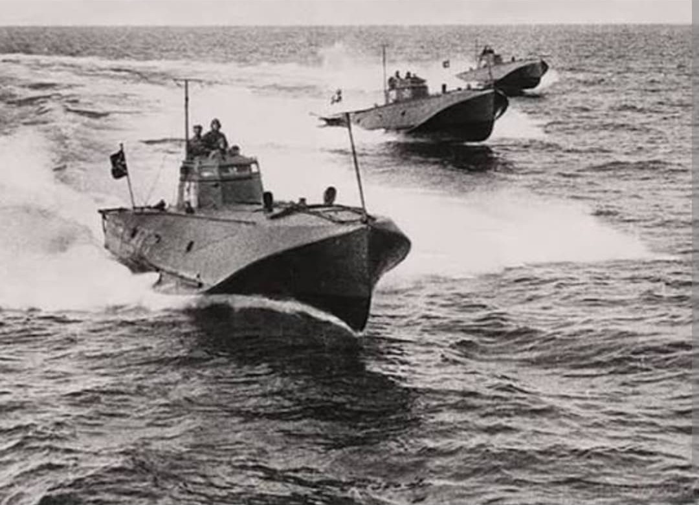
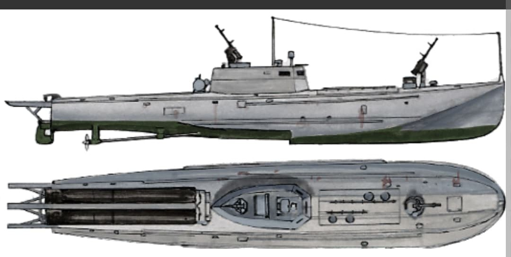

Introduction
Durant la Seconde Guerre mondiale, la surveillance et la protection des milliers de kilomètres de littoral, baies et embouchures stratégiques en URSS reposaient sur une vaste flotte de **vedettes de patrouille et chasseurs de sous-marins côtiers** (désignés Maly Okhotnik – « Petit Chasseur »).
Agiles, très rapides et produites en grande série, ces petites unités assuraient la lutte anti-sous-marine, la patrouille contre les vedettes rapides ennemies (S-Boote), la protection des convois côtiers et le transport de fusiliers marins.
Les différents modèles de vedettes
La Marine soviétique a développé plusieurs types de patrouilleurs selon les nécessités tactiques du combat côtier :
- Classe MO-4 : Le modèle emblématique avec coque en bois à triple épaisseur pour résister aux tirs légers et éviter le déclenchement des mines magnétiques.
- Classe BMO : Version blindée conçue en 1943 à Léningrad assiégée, protégée contre les obus de 20 mm et 37 mm de l'aviation et des vedettes allemandes.
- Classe MBK : Vedettes lourdes armées de tourelles de chars T-34 (canon de 76,2 mm) pour le soutien d'artillerie rapproché lors des débarquements.

Caractéristiques techniques principales (Classe MO-4)
- Type : Chasseur de sous-marins et patrouilleur côtier léger
- Équipage : 22 à 24 hommes
- Déplacement : 56 tonnes
- Dimensions : Longueur : 26,9 m | Largeur : 4,0 m | Tirant d'eau : 1,3 m
- Motorisation : 3 moteurs à essence GAM-34 (2 500 ch) – 3 hélices
- Vitesse maximale : 26 nœuds (48 km/h)
- Rayon d'action : ~360 milles marins à 20 nœuds
- Artillerie automatique : 2 canons automatiques de 45 mm 21-K (ou 37 mm 70-K)
- Mitrailleuses : 2 mitrailleuses lourdes DShK de 12,7 mm
- Lutte anti-sous-marine : 8 à 24 grenades de profondeur (BB-1/BM-1)
1941–1945 : Infiltrations et opérations amphibies
Grâce à leur très faible tirant d'eau, ces vedettes s'infiltraient de nuit près des berges ennemies pour débarquer les commandos de l'infanterie de marine (Morskaya Pekhota) en Crimée (Kertch, Novorossiysk), en Baltique et dans les fjords arctiques.
Certaines unités recevaient également des rampes de roquettes Katyusha navales de 82 mm ou 132 mm pour pilonner les fortifications côtières ennemies.

Bilan et postérité
Construites à plusieurs centaines d'exemplaires, les vedettes de patrouille ont été des actrices incontournables de la guerre côtière, démontrant une grande polyvalence et une efficacité redoutable malgré leur faible taille.
Voir aussi
Page du Musée HOP WW2 – Section Marine Soviétique